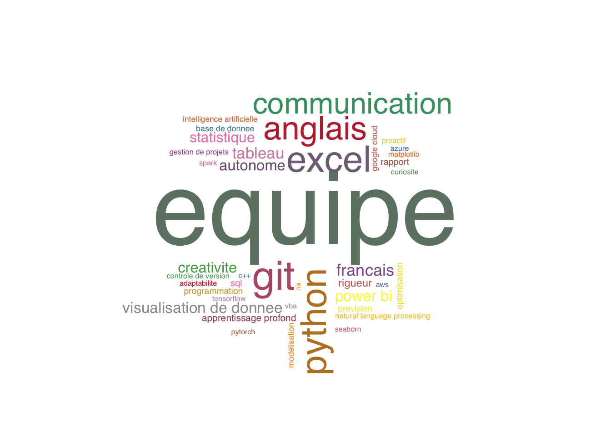

Analyse de données
Cette section est consacrée à l’analyse des données provenant des différentes bases, afin d’explorer les tendances et les liens entre l’innovation, les offres d’emploi et les niveaux de salaire.
I) Analyse des Relations entre Innovation, Offres d’Emploi et Valorisation Salariale
Figure 1 : Relation entre innovation (nombre de brevets) et rémunération moyenne par entreprise
Le graphique ci-dessous représente la relation entre le nombre de brevets déposés et le salaire annuel moyen proposé par différentes entreprises ou organisations. L’axe horizontal correspond au nombre de brevets (en échele logarithmique), tandis que l’axe vertical montre les salaires annuels moyens en euros.
Une observation générale révèle qu’il n’y a pas de corrélation évidente entre le nombre de brevets déposés et le niveau de salaire moyen. Certaines entreprises, comme Michelin, se distinguent par un nombre très élevé de brevets (proche de 10000), mais affichent des salaires moyens modérés comparés à d’autres entreprises présentes sur le graphique.
À l’inverse, des entités comme Demeter ou GmbH proposent des salaires annuels moyens très élevés (autour de 50000 euros), malgré un nombre de brevets beaucoup plus faible (moins de 10). Cela suggère que les brevets ne sont pas toujours le principal facteur influençant la rémunération des employés.
Les organisations académiques, telles que l’Université de Montpellier et le CNRS, occupent une position intéressante avec un nombre élevé de brevets (autour de 1000) et des salaires moyens compétitifs. Cela illustre leur rôle important dans la recherche et l’innovation, tout en offrant une rémunération relativement attractive pour ce type de structure.
En conclusion, ce graphique met en évidence des stratégies variées parmi les entreprises. Certaines priorisent l’innovation mesurée par le nombre de brevets tandis que d’autres mettent davantage l’accent sur la rémunération. Cette diversité souligne l’importance de considérer le contexte spécifique de chaque entreprise, notamment son secteur d’activité, pour comprendre les choix stratégiques qui influencent à la fois les brevets et la rémunération.
Figure 2 : Relation entre innovation (nombre de brevets) et les offres d’emploi proposées par les entreprises
Dans le graphique ci-dessus, représentant la relation entre l’innovation, mesurée par le nombre de brevets déposés par les entreprises, et le nombre d’offres d’emploi qu’elles proposent, il apparaît qu’il n’y a pas de tendance linéaire évidente ou de relation forte entre ces deux variables. On observe que de nombreux points sont concentrés vers le bas du graphique, ce qui reflète la présence d’entreprises qui publient une seule offre d’emploi dans la base de données étudiée. Cette concentration indique que, dans plusieurs secteurs, des entreprises très innovantes, mesurées par un nombre élevé de brevets déposés, n’augmentent pas nécessairement leur volume d’offres d’emploi. À l’inverse, d’autres secteurs, avec moins d’activité en matière d’innovation, peuvent être associés à une plus grande création de postes. Ces observations suggèrent que, dans l’échantillon étudié, les dépôts de brevets et les offres d’emploi semblent être influencés par des facteurs distincts et qu’une faible activité d’embauche peut coexister avec une forte intensité d’innovation.
Figure 3 : Relation entre innovation (nombre de brevets) et rémunération moyenne par classification des brevets
Le graphique analyse la relation entre le nombre moyen de brevets et le salaire annuel moyen pour différents domaines technologiques identifiés par leur classification internationale des brevets (IPC).
L’intérêt est de mettre en évidence les classifications de brevets les plus courantes ainsi que les domaines où les entreprises offrent les meilleures rémunérations.
Le domaine “Éléments caractéristiques des chaussures; parties constitutives des chaussures” (A43B) est associé à un salaire moyen élevé, avoisinant 60 000 euros, avec un nombre de brevets déposés relativement modéré (469 brevets). Cela suggère que les innovations dans le domaine des chaussures impliquent des compétences techniques spécifiques et une certaine spécialisation, justifiant les salaires élevés, même si le volume total de brevets reste limité.
Le secteur “Sciences médicales ou vétérinaires; hygiène” (A61K) se distingue par un nombre très élevé de brevets (8877 brevets), couplé à un salaire moyen de 36760 euros. Cela reflète une forte activité de recherche et développement dans le domaine médical et pharmaceutique, qui est essentiel pour les innovations liées à la santé. Les salaires relativement élevés traduisent l’importance stratégique et la technicité de ce secteur.
Dans le domaine des pneumatiques pour véhicules (B60C), on observe un volume important de brevets (7216 brevets), associé à un salaire moyen de 16260 euros. Bien que ce secteur soit très dynamique en termes d’innovations technologiques, le salaire moyen est légèrement inférieur aux autres secteurs mentionnés. Cela pourrait s’expliquer par une standardisation croissante ou une main-d’œuvre abondante dans ce domaine.
Ces trois secteurs montrent une forte diversité en termes de caractéristiques économiques et technologiques.
Figure 4 : Matrice de corrélation
La matrice de corrélation suivante illustre les relations entre les principales variables de notre étude : le nombre d’offres d’emploi, le nombre de brevets déposés et le salaire annuel moyen.
La matrice de corrélation indique que la relation entre le nombre d’offres d’emploi et le salaire moyen est négativement corrélée à -0,28, suggérant qu’il existe une faible tendance inverse entre ces deux variables. En d’autres termes, une augmentation des offres d’emploi pourrait être associée à une légère baisse des salaires, bien que cette relation soit faible.
De plus, la corrélation entre le nombre de brevets et le salaire moyen est également négative, à -0,36, ce qui suggère qu’une plus grande activité d’innovation dans les entreprises pourrait être liée à des salaires moyens plus faibles. Cependant, cette corrélation reste modérée et indique que d’autres facteurs peuvent influencer cette dynamique.
II) Carte interactive des brevets et offres d’emploi émis par departement
Cette carte interactive présente une vue géographique de la France, en détaillant deux indicateurs importants par département :
Le nombre de brevets : Ce chiffre reflète l’innovation et la protection de la propriété intellectuelle entre 2010 et 2020 dans chaque département.
Le nombre d’offres d’emploi : Ce nombre indique la quantité d’opportunités professionnelles disponibles dans chaque département. Les offres d’emploi sont un indicateur clé de la dynamique du marché du travail, montrant les secteurs qui recrutent activement dans chaque département.
III) Analyse des Compétences Requises au Croisement des Salaires et de l’Innovation
Figure 5 : Nuage de mots des compétences requises pondérées par le nombre de brevets déposés

Ce nuage de mots offre une analyse des compétences les plus fréquemment associées au dépôt de brevets, mettant en lumière les aptitudes qui soutiennent l’innovation et la propriété intellectuelle. Les compétences les plus représentées, telles que l’esprit d’équipe, la modélisation et la maîtrise des logiciels Python et Excel ainsi que de l’anglais, reflètent les piliers du travail de recherche et développement dans les entreprises.
Bien que moins fréquente dans le nuage, la compétence associée à l’intelligence artificielle illustre une tendance majeure de l’innovation contemporaine. En effet, l’intelligence artificielle est un domaine en pleine croissance, où le dépôt de brevets est particulièrement dynamique, soulignant son rôle stratégique dans les technologies de demain.
Ce nuage de mots met en lumière un équilibre entre compétences techniques, relationnelles, et comportementales nécessaires à l’innovation. La prééminence de la collaboration au sein d’une équipe, associée à des outils techniques, souligne que l’innovation repose autant sur des interactions collectives que sur des compétences techniques spécifiques. L’anglais et l’intelligence artificielle, quant à eux, traduisent l’enjeu global et technologique des inventions actuelles.
Figure 6 : Relation entre innovation (nombre de brevets) et les offres d’emploi par compétences requises
Ce graphique illustre la relation entre le nombre de brevets et le nombre d’offres d’emploi, avec chaque point représentant une compétence mentionnée dans les offres.
On observe une corrélation positive générale, les compétences associées à un plus grand nombre de dépôt de brevets tendent également à être plus demandées sur le marché du travail, avec davantage d’offres d’emploi. Cela indique que les secteurs innovants, caractérisés par une forte production de brevets, nécessitent des compétences spécifiques et génèrent une forte demande en main-d’œuvre qualifiée.
Les compétences telles que l’esprit d’équipe, la maîtrise de Python, Git et Excel, ainsi que la communication, sont particulièrement recherchées sur le marché du travail et très demandées par les secteurs innovants.